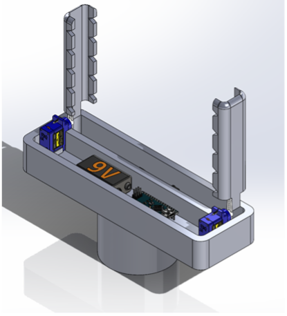
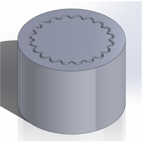
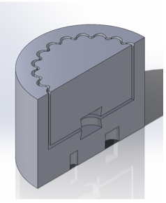
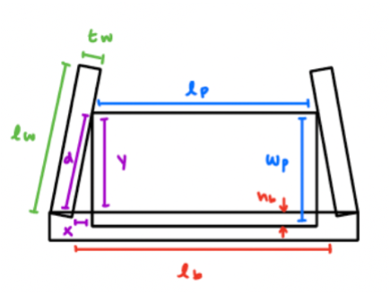
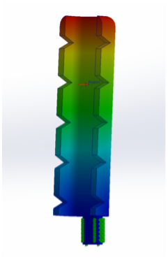
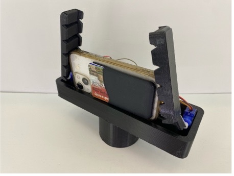

(03)
Tripod Attachment
Designing and manufacturing an assistive tripod attachment that automates phone mounting and simplifies camera positioning for users with limited wrist strength and dexterity.
Overview
Existing tripods often require users to perform small, high-precision movements, such as tightening mounting screws and adjusting knobs. These interactions can be difficult for users with limited wrist strength or dexterity. Our goal was to develop an assistive tripod attachment that simplifies phone mounting and positioning while remaining compatible with standard tripods.
My team designed and fabricated a functional prototype within a $200 budget, while also considering materials, manufacturing processes, and cost for eventual mass production.
User-Centered Design
We began by conducting user interviews and developing a survey to identify the most challenging interactions with existing tripods. Users identified small components such as mounting screws, wheels, and adjustment levers as significant barriers.
Based on these findings, we established three primary design requirements:
- Secure a phone without requiring the user to tighten a screw or clamp
- Minimize the force and dexterity required to operate the attachment
- Allow the phone to be positioned and removed easily
We brainstormed mechanisms for each function and used weighted design criteria to compare concepts. The final design combined an automated phone-gripping mechanism with a low-force tripod positioning interface.
Mechanical Design
The attachment automatically secures a phone when it is inserted into the base. An IR sensor detects the phone and triggers a pair of flexible TPU wings driven by micro servos. The wings open to accommodate the phone and close around it to provide a secure grip, eliminating the need for manual tightening.
We designed the mechanical components in SolidWorks, including the phone slot, gripping wings, servo interfaces, and tripod interface. The base is made from ABS and incorporates foam padding to accommodate phones of different sizes, while the flexible TPU wings provide compliant contact with the phone.

To simplify tripod adjustment, we designed a two-piece interface beneath the attachment. The interface uses rounded gear teeth to provide discrete angular positioning without requiring the user to loosen a knob. The inner component is made from TPU and the outer component from ABS.
We also incorporated magnets into the interface to allow the two components to snap together securely while remaining easy to separate for assembly and maintenance.


Engineering Analysis
I performed hand calculations and Finite Element Analysis (FEA) on the gripping wings to evaluate structural performance under expected loading. We targeted a high factor of safety to ensure the wings could withstand repeated opening and closing cycles without permanent deformation or failure.


Manufacturing & Cost
The prototype components were fabricated using 3D printing, allowing us to rapidly iterate on the geometry and test different configurations. For production, we evaluated alternative manufacturing methods based on expected volume, material selection, and unit cost.
Using a Protolabs quotation for a sample production quantity of 50 units, we estimated a manufacturing and assembly cost of approximately $58 per unit. Based on this estimate, we established a target selling price of approximately $62. We identified injection molding as the preferred production process due to its potential to reduce per-unit cost and support higher production volumes.
Results
We successfully fabricated and demonstrated a functional prototype that automatically secured an iPhone and integrated with a standard tripod. The final design reduced the need for fine motor control while maintaining a secure phone grip and adjustable positioning.
This project gave me experience translating user needs into mechanical requirements and carrying those requirements through CAD, FEA, prototyping, material selection, and manufacturing analysis.

